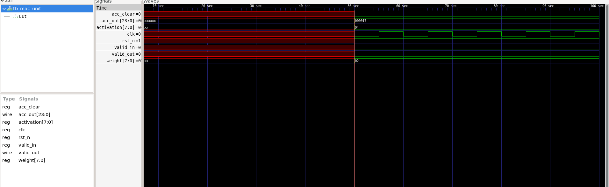

Featured Projects
Three projects in detail, the rest below.
NeuroEdge Compiler
An adaptive neural network compiler with hardware-aware optimization. It analyzes a trained CNN, compresses it, and generates Verilog for the compute units.
4xINT8 compression vs FP32
8xINT4 compression vs FP32
7.77xMixed precision (INT4+INT8)
70%Sparsity via threshold optimizer
- Mixed-precision quantizer picks INT4 or INT8 per layer based on quantization error.
- Pruning threshold optimizer uses binary search to hit a target sparsity.
- RTL: MAC unit (8-bit inputs, 24-bit accumulator), conv layer, ReLU and top module, plus a Python RTL generator for INT4 and INT8 MAC variants.
- Verified with a self-checking testbench:
TEST PASSED, acc_out = 23.



32-bit ALU for RISC-V (RV32I)
- Implements 8 RV32I operations: ADD, SUB, AND, OR, XOR, SLL, SRL, SLT.
- Zero-flag logic to support branch instructions, verified with a testbench.
- Clean
src/andtestbench/structure following industry RTL conventions.
UART Transmitter
- FSM with 4 states: IDLE, START, DATA, STOP.
- 8-bit serial transmission with start/stop framing and a done flag.
- Verified clock generation and reset behavior across multiple bytes.
Embedded & IoT
Hardware I built before moving into VLSI.
IoT Fingerprint Security
Biometric access control with cloud-connected monitoring.
Women's Safety Device
Wearable with GPS tracking and GSM-based SOS alerts, tested over 500m+ range.
Face Recognition Door Lock
Real-time facial recognition door unlock with sub-2-second response.